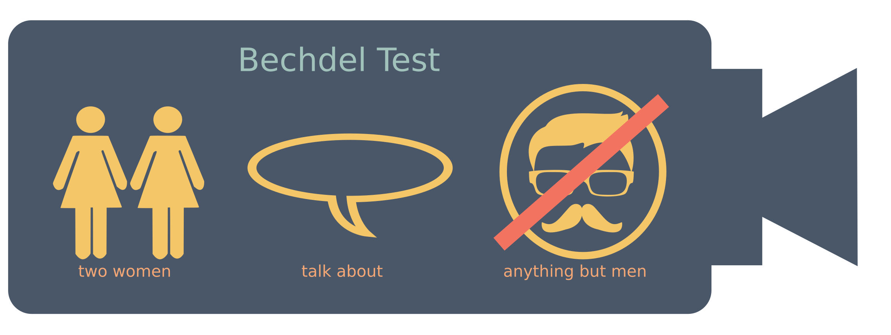
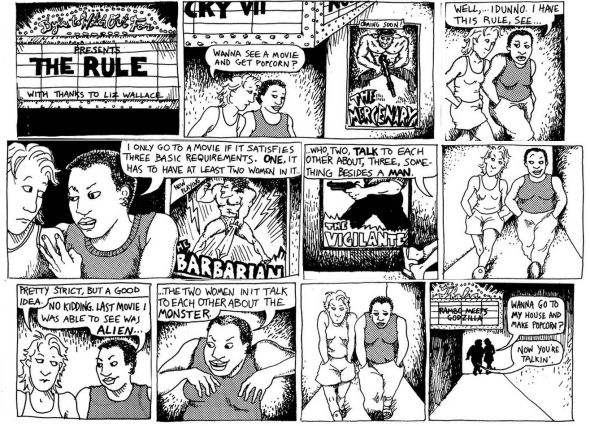

Тест Бекдел (часто — тест Бехдель) — тест на гендерную предвзятость в художественном произведении. Чтобы пройти его, произведение должно содержать в себе хотя бы два женских персонажа, которые беседуют между собой о чём-либо, помимо мужчин. Иногда добавляют, что эти две женщины должны быть названы по именам. Тест назван в честь американской карикатуристки Элисон Бекдел. В 1985 году одна из героинь её комикса «Dykes to Watch Out For» озвучила идею, которую Элисон приписывает подруге, Лиз Уоллес (англ. Liz Wallace). Тест изначально был предназначен для оценки фильмов, но с тех пор применяется и в других средствах массовой информации. Также известен как тест Бекдел — Уоллес,правило Бекдел, закон Бекдел, измеритель фильмов Мо (Мо — одна из героинь комикса). Хотя изначально тест был «небольшой лесбийской шуткой в альтернативной феминистической газете», его быстро подхватили кинокритики, и он «стал, в некотором роде, стандартом оценки телевидения, кино и книг».
В эссе 1929 года «Собственная комната» (англ. «A Room of One’s Own») Вирджиния Вулф заметила о литературе своей эпохи то же, что Бекдел заметила в произведениях своего времени:
«Все эти отношения между женщинами, думала я, быстро перебирая в памяти блистательные образы вымышленных женщин, слишком просты. […] И я попыталась вспомнить хоть один случай за всё время моего чтения, когда две женщины изображены подругами. […] Время от времени они — матери и дочери. Но почти без исключений они показаны в их отношении к мужчинам. Было странно осознавать, что все великие женские литературные персонажи до эпохи Джейн Остин не только были объектом рассмотрения другого пола, но рассматривались только в отношении к другому полу. Но как же мала эта часть жизни женщины» […]
Исследование 855 наиболее финансово успешных фильмов США между 1950 и 2006 годами показало, что практически неизменно на всём протяжении исследуемого периода на каждого женского персонажа в среднем приходилось два мужских. Согласно исследованию, женские персонажи по сюжету в два раза более склонны заняться сексом, чем мужчины, а доля откровенных сцен с участием женщин со временем только растёт. При этом сравнительный уровень жестокости мужчин и женщин не изменился[6]. Согласно исследованию 2014 года, проведённому Институтом Джины Дэвис по проблемам гендера в художественной культуре[en], только 31 % персонажей, названных на экране по имени, были женщинами и только в 23 % кинокартин женщина была главным героем (или одним из главных). Среди режиссёров только 7 % оказались женщинами. Исследование включало 120 картин, снятых с 2010 по 2013 год по всему миру[7]. Другое исследование оценило 700 самых кассовых фильмов между 2007 и 2014 годом. Оказалось, что только 30 % говорящих на экране персонажей были женщинами[8].
Правило, ныне известное как «тест Бекдел», впервые появилось в комиксе Элисон Бекдел «Dykes To Watch Out For» в 1985 году[9]. В выпуске комикса под названием «Правило»[10] две женщины собираются пойти в кино и одна из них поясняет, что смотрит только фильмы, удовлетворяющие следующим трём требованиям:
Вторая женщина соглашается, что критерии строгие, но идея хорошая. Неожиданно ни один фильм под эти критерии не попадает, и женщины возвращаются домой. Героиня комикса сетует, что последним фильмом, который ей удалось посмотреть, был «Чужой». В 2013 году о тесте уже говорили как о «расхожей фразе», описывающей то, является ли фильм сексистским по отношению к женщинам[11]. В прессе обсуждалось, что даже крупные мейнстримовые картины, такие как «Тихоокеанский рубеж», не проходят три простых критерия[12]. Есть попытки автоматизировать тест[13]. Тест иногда уточняют или дополняют его критерии, например, чтобы женские персонажи по сценарию обладали именами или чтобы их диалоги превышали в сумме 60 секунд[14].
В 2013 году четыре шведских кинотеатра и один канал кабельного телевидения при поддержке Шведского института кино стали использовать тест Бекдел наравне с другими рейтингами[15]. В 2014 году европейский фонд кино Eurimages включил тест Бекдел в анкету соискателей грантов[16].
Веб-сайт «bechdeltest.com» содержит заполняемую пользователями базу данных о соответствии порядка 4500 кинокартин тесту Бекдел (с дополнительным условием того, что женский персонаж должен по сценарию обладать именем). По состоянию на апрель 2015 года, 58 % перечисленных фильмов подходили под все три критерия теста, 10 % провалили один критерий, 22 % — два, 10 % — три[17]. В 2010 году журналист «Entertainment Weekly» Марк Харрис пишет, что половина номинантов на «Оскар» за лучший фильм провалила бы тест[18]. Новостной сайт «Vocativ» проверил самые кассовые фильмы 2013 года и заключил, что тест прошла примерно половина[19]. Писатель Чарльз Стросс замечает, что примерно в половине фильмов, которые проходят тест, женщины говорят не о мужчинах, но о браке или детях[20]. С другой стороны, некоторые фильмы, снятые именно о женщинах или для женщин, тест не проходят. Создатели сериала «Секс в большом городе», где все четыре главных персонажа — женщины, отреагировали на это репликой одной из героинь, которая удивляется: «Как так получается, что четырём настолько умным женщинам не о чем поговорить, кроме своих бойфрендов? Как будто мы семиклассницы, только с банковскими счетами!»[9] Тест также использовали для оценки компьютерных игр[21][22][23] и комиксов[24].
Сайт «Vocativ» выяснил, что фильмы, прошедшие тест, заработали в США 4,22 миллиарда долларов, а провалившие — 2,66 миллиарда. Из этого авторы делают вывод, что Голливуд может заработать больше денег, давая больше экранного времени женщинам[19]. Веб-сайт «FiveThirtyEight[en]» 1 апреля опубликовал заметку, из которой следует, что медианный бюджет фильмов, прошедших тест, был на 35 % ниже, на основании 1615 фильмов, выпущенных с 1990 по 2013 год. Кроме того, фильмы, прошедшие тест, показали на 37 % более высокую окупаемость в США и такую же окупаемость за пределами США, как и фильмы, провалившие тест[25].
Тест Бекдел лишь в первом приближении указывает на то, в какой мере женщины представлены в произведении. Произведение может пройти тест, но быть при этом сексистским, и наоборот, произведение, где главными персонажами являются женщины, может его не пройти[26]. Произведение также может провалить тест из-за того, что время и место действия не подразумевают значительной роли женщины, как, например, «Имя розы» Умберто Эко, где сюжет разворачивается в мужском монастыре в Средние века[27]. На эти недостатки указывает кинокритик Робби Коллин[en], описывая тест как «формальный» и «сконцентрированный на собирании статистики, а не анализе»[28]. Исследователь Фейт Лоуренс отмечает, что статистика по тесту очень сильно зависит от того, насколько строго определены критерии, например, инвалидируется ли весь диалог единственным упоминанием мужчины, или что именно считать началом и концом диалога[29]. Критик Нина Пауэр[en] задаётся вопросом, должно ли вообще искусство стремиться пройти тест Бекдел или преследовать собственные изобразительные цели. Кроме того, если искусство отображает реальность, возникает вопрос, проходит ли сама реальность этот тест[20]. Ответом на скептику называют «обратный тест Бекдел» — практически в любом фильме можно выделить двух мужчин, разговаривающих о чём-то, кроме женщины[30].
Тест Бекдел стал основой для нескольких тестов, связанных с ролью женщин или других гендеров в культуре и иных областях человеческой деятельности.
Лори Восс, технический директор компании npm, в шутку предложил «тест Бекдел для программного обеспечения». Программа проходит тест, если содержит хотя бы одну функцию, написанную женщиной, которая вызывает хотя бы одну другую функцию, написанную другой женщиной[31]. Его предложение было отмечено в прессе[32][33] после того, как федеральное агентство США 18F[en] использовало этот тест для анализа собственного программного обеспечения[34].
Тест был предложен журналисткой Кристи Ашванден и назван именем другой журналистки, Энн Финкбейнер, которая призывала коллег писать о женщинах-учёных как об учёных, а не как о женщинах. Согласно тесту, статья о женщине-учёном признаётся сексистской, если содержит упоминание следующих фактов[35]: